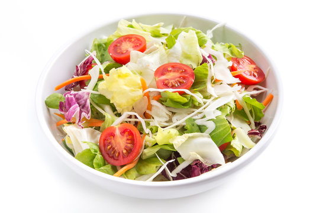

Röstpaprika-Tomaten-Knoblauch-Dressing

Zurück zur Homepage
Beschreibung
Eine leckere Salatsauce passend zum Schweinefilet Toulouse!
Diese Salatsauce eignet sich bestens als Beilage zum Schweinefilet Toulouse. Hergerichtet wird der Salat am idealsten mit
grünem Blattsalat und kleinen Cherrytomaten sowie Streifen von Sellerie und Karotten.
Der frische, knackige Salat verschafft ihrem Gaumen eine angenehme Frische und lässt den Geschmack im gesamten Mund entfalten.
Wir wünschen einen guten Appetit!
Zutaten
- Tomaten, reif, 200g
- Paprikaschote, rot, gross, 1 Stk.
- Fenchelsamen, 1 TL
- Kreuzkümmelsamen, 1/2 TL
- Korandersamen, 1 TL
- Chia-Öl, 100ml
- Knoblauchzehen, fein geschnitten, 2 Stk.
- Apfelessig, 5 TL
- Honig, flüssig, 1 EL
- Meersalz, 1 Prise
- Paprikapulver, geräuchert, süss, 1/2 TL
- Cayennepfeffer, 1 Prise
Kochschritte
- Den Backofen auf 200 Grad vorheizen
- Die tomaten halbieren und zusammen mit der ganzen Paprikaschote auf ein Backblech legen.
Im vorgeheizten Backofen 25 Minuten rösten, bis die Paprikahaut Blasen wirft und die Tomaten
schwarze Stellen bekommen.
- Die Paprikahaut abziehen, die Samen entfernen und dass Fruchtfleisch zerkleinern. Einen Teil
der Tomatensamen entfernen (dadurch wird das Dressing süsser).
- In einer kleinen Pfanne Fenchel-, Kreuzkümmel- und Koriandersamen auf kleiner Hitze ohne Fett
rösten, bis sich ihr Aroma entfaltet. 1 Teelöfel Chia-Öl und den Knoblauch hinzufügen und goldbraun
rösten Er darf nicht anbrennen, sonst schmeckt er bitter.
- Alle Zutaten im Mixer oder mit dem Stabmixer glatt und cremig-weich pürieren. Das Dressing durch
ein feines Sieb in ein sterilisiertes Schraubglas passieren.
Zurück zur Homepage